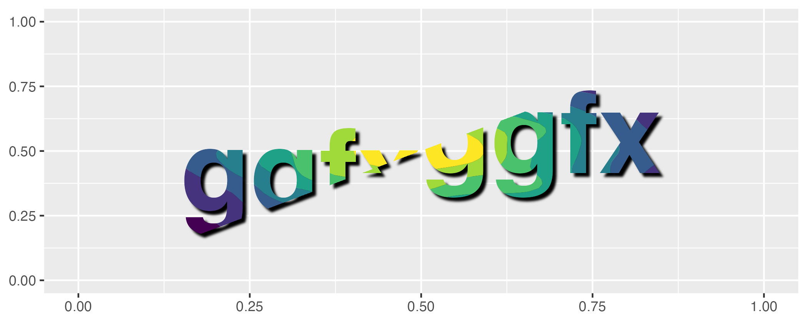

ggfx is a (currently experimantal) package that allows the use of various filters and shaders on ggplot2 layers.
Installation
ggfx is not on CRAN yet (but will probably at some point). In the mean time, if you are craving for that sweet sweet blur, you can install it from github:
# install.packages('devtools')
devtools::install_github('thomasp85/ggfx')Example
The basic API of ggfx is to provide a range of with_*() modifier functions instead of special versions of common geoms. This means that ggfx will work with any geom from ggplot2 and the extension packages (I think…). An example showing some of the different functionalities are given below. Note that the output is produced with regular geoms.
library(ggplot2)
library(ggfx)
ggplot() +
as_reference(
geom_polygon(aes(c(0, 1, 1), c(0, 0, 1)), colour = NA, fill = 'magenta'),
id = "displace_map"
) +
with_displacement(
geom_text(aes(0.5, 0.5, label = 'ggfx-ggfx'), size = 25, fontface = 'bold'),
x_map = ch_red("displace_map"),
y_map = ch_blue("displace_map"),
x_scale = unit(0.025, 'npc'),
id = "text"
) +
with_blend(
geom_density_2d_filled(aes(rnorm(1e4, 0.5, 0.2), rnorm(1e4, 0.5, 0.2)),
show.legend = FALSE),
bg_layer = "text",
blend_type = "in",
id = "blended"
) +
with_shadow("blended", sigma = 3) +
coord_cartesian(xlim = c(0, 1), ylim = c(0, 1), clip = 'off') +
labs(x = NULL, y = NULL)
Code of Conduct
Please note that the ggfx project is released with a Contributor Code of Conduct. By contributing to this project, you agree to abide by its terms.